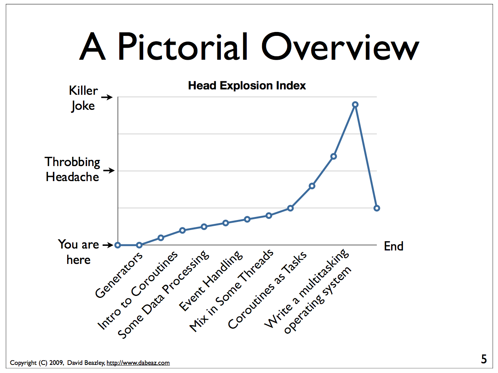

Asychronous Programing¶
Async: Not knowing what is happening when…
Whirlwind Tour of Concurrency¶
Before we get into async, it helps to know a a bit about Concurrency:
Having different code running at the same time.
Async and Concurrency are really two different things – you can do either one without the other – but they are closely related.
In “Concurrency is not parallelism” Rob Pike makes a key point: Breaking down tasks into concurrent subtasks only allows parallelism, it’s the scheduling of these subtasks that creates it.
Async is about the scheduling.
Types of Concurrency¶
(definitions here)
Multithreading:
what is a thread?
Multiprocessing:
what is a process
Advantages / Disadvantages of Threads¶
Threads are light-weight – they share memory space, and thus can be created fairly quickly without much memory use. Multiple threads share the same memory, so easy and cheap to pass data around.
But – since threads share the same memory, things can get out of whack – thus the dreaded:
Global Interpreter Lock
(GIL)
The GIL locks the interpreter so that only a single thread can run at once, assuring that one thread doesn’t make a mess of the python objects that another thread needs. The upshot:
Python threads do not work well for computationally intensive work.
Python threads work will if the threads are spending time waiting for something:
- Database Access
- Network Access
- File I/O
More in the GIL:
https://emptysqua.re/blog/grok-the-gil-fast-thread-safe-python/
If you really want to understand the GIL – and get blow away – watch this one:
http://pyvideo.org/pycon-us-2010/pycon-2010–understanding-the-python-gil—82.html
Advantages / Disadvantages of Processes¶
Processes are heavier weight – each process makes a copy of the entire interpreter (Mostly…) – uses more resources.
You need to copy the data you need back and forth between processes.
Slower to start, slower to use, more memory.
no GIL
Multiprocessing is suitable for computationally intensive work.
Works best for “large” problems with not much data:
The mechanics: how do you use threads and/or processes¶
Python provides the threading and multiprocessing modules to facility concurrency.
They have similar APIs – so you can use them in similar ways.
Key points:
- Fill in the mechanics here…..
- starting threads
- keeing things in sync
- queues
- locks
- etc.
Asynchronous Programming¶
What is it?
Approaches:
- Event Loops
- Callbacks
- Coroutines
Why Async?¶
This is a pretty good overview of why you might want to use async:
https://hackernoon.com/asyncio-for-the-working-python-developer-5c468e6e2e8e#.dlhcuy23h
In: “A Web Crawler With asyncio Coroutines”, Guido himself writes:
Many networked programs spend their time not computing, but holding open many connections that are slow, or have infrequent events. These programs present a very different challenge: to wait for a huge number of network events efficiently. A contemporary approach to this problem is asynchronous I/O, or “async”.
http://www.aosabook.org/en/500L/a-web-crawler-with-asyncio-coroutines.html
So my take:
Async is the good approach to support many connections that are spending a lot of time waiting, and doing short tasks when they do do something.
NOTE: the backbone of the web is HTTP – which is a “stateless” protocol. That is, each request is independent (state is “faked” with sessions via cookies). So “classic” web apps are NOT keeping many connections alive, there may be many clients at once, but each request is still independent. And often there is substantial work do be done with each one. A multi-threaded or multi-processes web server works fine for this.
Single Page Apps and WebSockets¶
“Single Page Apps”
A single-page application (SPA) is a web application … providing a user experience similar to that of a desktop application. … Interaction with the single page application often involves dynamic communication with the web server behind the scenes.
Communication with the web service can be regular old http (AJAX), or in modern implementations:
WebSocket:
WebSocket is a computer communications protocol, providing full-duplex communication channels over a single TCP connection.
WebSocket gives the advantage of “pushing” – the server can push information to the client, rather than the client having to poll the server to see if anything needs to be updated.
Either HTTP or WebSocket can generate many small requests to the server, which async is good for, but WebSocket pretty much requires an async server if you want it to scale well, as each active client is keeping a connection open.
Also: often a web service is depending on other web services to do it’s task. Kind of nice if your web server can do other things while waiting on a third-party service.
Blocking¶
A “Blocking” call means a function call that does not return until it is complete. That is, an ordinary old function call:
call_a_func()
The program will stop there and wait until the function returns before moving on. Nothing else can happen. Usually this is fine, the program may not be able to do anything else until it gets the result of that function.
But what if:
- That function will take a while?
- And it’s mostly just waiting for the network or database, or….
Maybe your application needs to be responsive to user input, or do other work while that function is working. how do you deal with that?
Event Loops¶
Asynchronous programming is not new – it is the key component of traditional desktop Graphical User Interface Programs. The GUI version is often referred to as “event-driven” development:
You write “event handlers” that respond to particular events in the GUI: moving the mouse, clicking on a button, etc.
The trick is that you don’t know in what order anything might happen – there are Multiple GUI objects on the screen at a given time, and users could click on any of them in any order.
This is all handles by and “event loop”, essentially code like this:
while True:
evt = event_queue.pop()
if evt:
evt.call_handler()
That’s it – it is an infinite loop that continually looks to see if there are any events to handle, and if there are, it calls the event handler for that event. Meanwhile, the system is putting events on the event queue as they occur: someone moving the mouse, typing in control, etc.
It’s important is that event handlers run quickly – if they take a long time to run, then the GUI is “locked up”, or not responsive to user input.
If the program does need to do some work that takes time, it needs to do that work in another thread or processes, and then put an event on the event queue when it is done.
For some examples of this, see:
https://www.blog.pythonlibrary.org/2013/06/27/wxpython-how-to-communicate-with-your-gui-via-sockets/
Callbacks¶
Callbacks are a way to tell a non-blocking function what to do when they are done. This is a common way for systems to handle non-blocking operations. For instance, in Javascript http requests are non-blocking. The request function call will return right away.
request('http://www.google.com',
function(error, response, body){
console.log(body);
});
What this means is make a request to Google, and when the request is complete, call the function with three parameters: error, response, and body. This function is defined inline, and simply passes the body to the console log. But it could do anything.
That function is put on the event queue when the request is done, and will be called when the other events on the queue are processed.
Contrast with with the “normal” python request:
import requests
r = requests.get('http://www.google.com')
print(r.text)
The difference here is that the program will wait for requests.get() call to return, and that won’t happen until the request is complete. If you are making a lot of requests and they take a while, that is a lot of time sitting around waiting when your computer isn’t doing anything.
Async programming usually (always?) involves an event loop to schedule operations.
But callbacks are only one way to communicate with the event loop.
Coroutines¶
Coroutines are computer program components that generalize subroutines for non-preemptive multitasking, by allowing multiple entry points for suspending and resuming execution at certain locations. Coroutines are well-suited for implementing more familiar program components such as cooperative tasks, exceptions, event loops, iterators, infinite lists and pipes.
https://en.wikipedia.org/wiki/Coroutine
Coroutines are functions that can hold state, and varies between invocations; there can be multiple instances of a given coroutine at once.
This may sound a bit familiar from generators – a generator function can hold state when it yields, and there can be multiple instances of the same generator function at once.
In fact, you can use generators and yield to make coroutines, and that was done in Python before version 3.5 added new features to directly support coroutines.
Warning: This is really hard stuff to wrap your head around!
async / await¶
In Python 3.5, the async and await keywords were added to make coroutines “native” and more clear.
You define a coroutine with the async keyword:
async def ping_server(ip):
pass
When you call ping_server, it doesn’t run the code. what it does is return a coroutine, all set up and ready to go.
In [12]: cr = ping_server(5)
In [13]: cr
Out[13]: <coroutine object ping_server at 0x104d75620>
Running a Coroutine¶
So how do you actually run the code in a coroutine?
await
await a_coroutine
It’s kind of like yield (from generators), but instead it returns the next value from the coroutine, and pauses execution so other things can run.
await suspends the execution (letting other code run) until the object called returns.
When you call await on an object, it needs to be an “awaitable” object: an object that defines an __await__() method which returns an iterator which is not a coroutine itself. Coroutines themselves are also considered awaitable objects.
Think of async/await as an API for asynchronous programming¶
async/await is really an API for asynchronous programming: People shouldn’t think that async/await as synonymous with asyncio, but instead think that asyncio is a framework that can utilize the async/await API for asynchronous programming.
Future object¶
A Future object encapsulates the asynchronous execution of a callable – it “holds” the code to be run later.
It also contains methods like:
cancel()
Cancel the future and schedule callbacks.
done()
Return True if the future is done.
result()
Return the result this future represents.
add_done_callback(fn)
Add a callback to be run when the future becomes done.
set_result(result)
Mark the future done and set its result.
A coroutine isn’t a future, but they can be wrapped in one by the event loop.
The Event Loop¶
The whole point of this to to pass events along to an event loop. So you can’t really do anything without one.
The asyncio package provides an event loop:
The asyncio event loop can do a lot:
- Register, execute, and cancel delayed calls (asynchronous functions)
- Create client and server transports for communication
- Create subprocesses and transports for communication with another program
- Delegate function calls to a pool of threads
But the simple option is to use it to run coroutines:
import asyncio
async def say_something():
print('This was run by the loop')
# getting an event loop
loop = asyncio.get_event_loop()
# run it:
loop.run_until_complete(say_something())
loop.close()
Note that asyncio.get_event_loop() will create an event loop in teh mian thread if one doesn’t exist – and return the existing loop if one does exist. So you can use it to get the already existing, and maybe running, loop from anywhere.
This is not a very interesting example – after all, the coroutine only does one thing and exits out, so the loop simply runs one event and is done.
Let’s make that a tiny bit more interesting with multiple events:
import asyncio
async def say_lots(num):
for i in range(num):
print('This was run by the loop:')
await asyncio.sleep(0.2)
# getting an event loop
loop = asyncio.get_event_loop()
# run it:
loop.run_until_complete(say_lots(5))
print("done with loop")
loop.close()
(Examples/async/ultra_simple)
Still not very interesting – technically async, but with only one coroutine, not much to it.
So let’s see an even more interesting example:
(Examples/async/async_timer.py)
import asyncio
import time
import datetime
import random
# using "async" makes this a coroutine:
# its code can be run by the event loop
async def display_date(num):
end_time = time.time() + 10.0 # we want it to run for 10 seconds.
while True: # keep doing this until break
print("instance: {} Time: {}".format(num, datetime.datetime.now()))
if (time.time()) >= end_time:
print("instance: {} is all done".format(num))
break
# pause for a random amount of time
await asyncio.sleep(random.randint(0, 3))
def shutdown():
print("shutdown called")
# you can access the event loop this way:
loop = asyncio.get_event_loop()
loop.stop()
# You register "futures" on the loop this way:
asyncio.ensure_future(display_date(1))
asyncio.ensure_future(display_date(2))
loop = asyncio.get_event_loop()
# or add tasks to the loop like this:
loop.create_task(display_date(3))
loop.create_task(display_date(4))
# this will shut the event loop down in 15 seconds
loop.call_later(15, shutdown)
print("about to run loop")
# this is a blocking call
loop.run_forever()
print("loop exited")
Calling a regular function¶
The usual way to use the event loop is to schedule “awaitable” tasks – i.e. corotuines.
But sometimes you need to call a regular old function.
This is more like the traditional “callback” style:
You can do that with:
event_loop.call_soon(callback, *args)
This will put an event on the event loop, and call the function (callable) passed in, passing on any extra arguments as keyword arguments. It will run “soon”
Similarly, you can schedule a callable to be run some number of seconds in the future:
event_loop.call_later(delay, callback, *args)
Or at some specified time:
event_loop.call_at(when, callback, *args)
Absolute time corresponds to the event loop’s time() method: event_loop.time()
If you need to put an event on the loop from a separate thread, you can use:
event_loop.call_soon_threadsafe(callback, *args)
Giving up control¶
await passes control back to the event loop – cooperaive multitasking!
Usually, you actually need to wait for a task of some sort. but if not, and you still need to give up control, you can use:
await asyncio.sleep(0)
You can, of course, actually have to pause for a period of time, but other than demos, I’m not sure why you’d want to do that.
Running Blocking Code¶
Sometimes you really do need to run “blocking” code – maybe a long computation, or reading a big file, or…..
In that case, if yo don’t want your app locked up – you need to put it in a separate thread (or process). Use:
result = await loop.run_in_executor(Executor, function)
This will run the function in the specified Executor:
https://docs.python.org/3/library/concurrent.futures.html#concurrent.futures.Executor
If Executor is None – the default is used.
Examples/async/async_executor.py
import asyncio
import time
import datetime
import random
async def small_task(num):
"""
Just something to give us little tasks that run at random intervals
These will go on forever
"""
while True: # keep doing this until break
print("task: {} run".format(num))
# pause for a random amount of time between 0 and 2 seconds
await asyncio.sleep(random.random() * 2)
async def slow_task():
while True: # keep going forever
print("running the slow task- blocking!")
# This will block for 2-10 seconds!
result = slow_function(random.random() * 8 + 2)
# uncomment to put it on a different thread:
# result = await loop.run_in_executor(None,
# slow_function,
# random.random() * 8 + 2)
print("slow function done: result", result)
await asyncio.sleep(0.1) # to release the loop
def slow_function(duration):
"""
this is a fake function that takes a long time, and blocks
"""
time.sleep(duration)
print("slow task complete")
return duration
# get a loop going:
loop = asyncio.get_event_loop()
# or add tasks to the loop like this:
loop.create_task(small_task(1))
loop.create_task(small_task(2))
loop.create_task(small_task(3))
loop.create_task(small_task(4))
# Add the slow one
loop.create_task(slow_task())
print("about to run loop")
# this is a blocking call
# we will need to hit ^C to stop it...
loop.run_forever()
print("loop exited")
Doing real work with async¶
So what kinds of real things can you do with asychronous programming?
asyncio provides the core tools to write asychronous programs:
- An event loop with a lot of features
- Asynchronous versions of core network protocols: i.e. sockets.
- file watching
But chances are, if you want to do something real, you’ll use a library..
Web servers and clients¶
There have been a few async frameworks around for Python for a while:
The granddaddy of them all:
Twisted https://twistedmatrix.com/trac/
Relative Newcomer:
Tornado: http://www.tornadoweb.org/en/stable/
Using the latest and greatest:
Once the asyncio package was added to the standard lib the tools are there to build “proper” http servers, etc:
aiohttp is an http server (and client) built on top of asyncio:
http://aiohttp.readthedocs.io/
(Twisted, Tornado, and the others have their own implementation of much of what is in asycio)
As it’s the most “modern” implementation – we will use it for examples in the rest of this class:
pip install aiohttp
References:¶
The Asyncio Cheat Sheet: This is a pretty helpful, how to do it guide.
http://cheat.readthedocs.io/en/latest/python/asyncio.html
David Beazley: Concurrency from the ground Up.
He writes a full async client server from scratch before your eyes – this guy can write code faster than most of us can read it…
David Beazley: asyncio:
https://www.youtube.com/watch?v=lYe8W04ERnY
When to use what¶